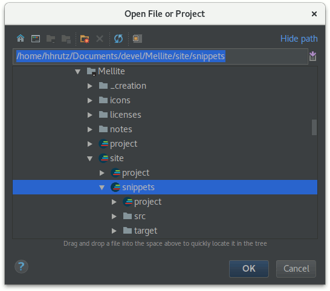
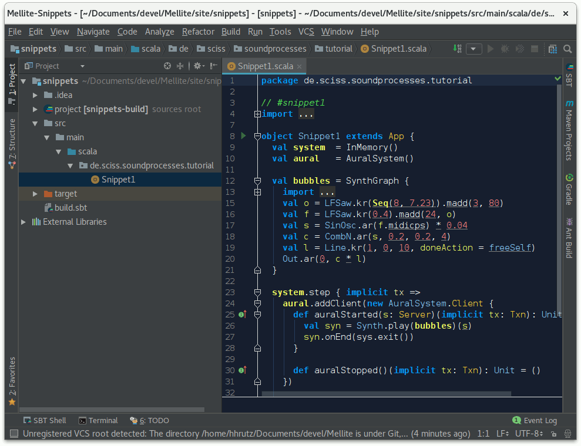
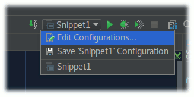
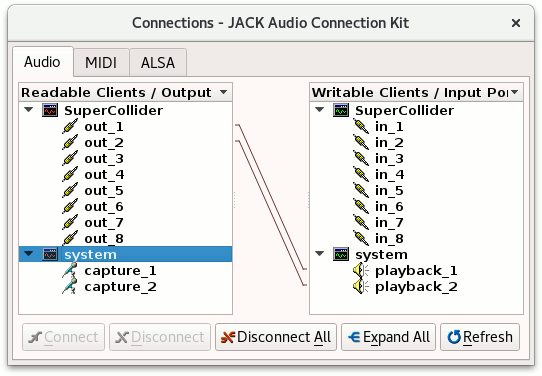
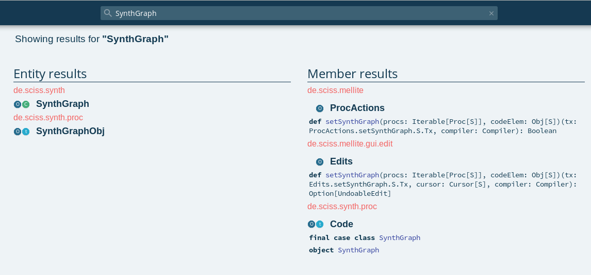
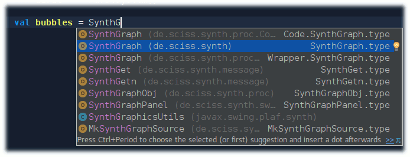

Intro to SoundProcesses
If you have gone through the video tutorials of Mellite, you may wonder if there is more to it than the limited GUI interaction. In fact, Mellite is, properly speaking, only the graphical user interface layer on top of a system of computer music abstractions that is called SoundProcesses. When you create and manipulate objects in Mellite, you are actually creating and manipulating objects in SoundProcesses, through the GUI provided by Mellite. In order to make use of the power of the system, it is thus necessary to dive a bit deeper and learn about the application programming interface (API) provided by SoundProcesses. You may still access this API through Mellite, but you may also choose to write your sound programs directly in a general code editor or integrated development environment (IDE), such as IntelliJ IDEA.
In the following tutorial, we will write code as such an independent project, not making any references to Mellite. I will try to assume that you have not much experience with either Scala, ScalaCollider (the sound synthesis library used by SoundProcesses) or IntelliJ IDEA. However, I will also assume that you have some programming experience, perhaps in Java or SuperCollider, so that some concepts may be familiar, although you know them from a different language.
This tutorial will thus be a quite long trip, introducing you to all of these things step by step. Instead of giving a separate Scala tutorial (there are many resources out on the Internet), I will introduce Scala concepts as we encounter them.
This tutorial is a living document. Please help improve it by reporting problems in understanding, errors, or by making suggestions on how to improve it. The best way is to pass by the Gitter chat room, or if you can nail it down to a particular typo, problem or suggestion, by filing a ticket in the issue tracker.
Preparations
I assume that you have SuperCollider, Java, and git already installed on your system, and proceed from there. You can either copy and paste the code snippets from this page, or clone the Mellite repository. Let’s do the latter. In the following, a dollar sign $ indicates the terminal or shell prompt.
$ cd ~/Documents # or any place where you would like to download the repository to
$ git clone https://github.com/Sciss/Mellite.git
This will take a while, then you will find the snippets project in Mellite/site/snippets. You can see that directory online. This project uses sbt as a build tool, however we’ll just build and run from IntelliJ IDEA, so you don’t actually have to install sbt at this point.
You can download IntelliJ IDEA here. It is a development environment made by JetBrains, and it comes in two flavours—‘ultimate’ and ‘community’. The latter is free and open source, so we’ll use that one. As of this writing, on Linux this will download ideaIC-2017.2.2.tar.gz. The archive can be unpacked anywhere, and the application can be launched with the shell script bin/idea.sh. If you have never run IntelliJ, it will ask you a few questions, among others it offers you to install some plugins. Make sure that you choose to install the ‘Scala’ plugin. If you missed to do so, you can install plugins from within IntelliJ by going to Settings > Plugins and looking for ‘Scala’.
Once IntelliJ has started, you should see its welcome screen:

Choose ‘open’ and navigate to the snippets directory inside the Mellite repository clone:

Next, you will be asked how to import the project. IntelliJ will detect that sbt is used to build the project, so the defaults should be fine:

If you have not set up a ‘Project SDK’ yet, you’ll first have to press ‘New…’ > JDK and locate your Java 8 installation (IntelliJ will probably guess it right).
Next, IntelliJ will build the project information, download all the necessary libraries for this project, and finally give you a project browser. If you don’t see the browser, Alt-1 will toggle it. Open the tree to src > main > scala > de.sciss.soundprocesses.tutorial, and locate Snippet1, the source code of which you can open by double-clicking on it:

You can build (compile) the project by clicking the green downward arrow button in the top-right of the window or typing Ctrl-F9 on the keyboard. If all goes fine, the status bar at the bottom should say something like
Compilation completed successfully in 5s 388ms (moments ago)
If there was an error, a panel would pop up showing you the errors with links to the source code.
A few observations until here:
- IntelliJ IDEA is an application that manages software projects, giving you a project browser with directories to the source code of your project, a main editor window for creating and editing the source code, and actions to compile and run your code
- To edit Scala code, the Scala plugin for IntelliJ IDEA must be installed. It is capable of parsing build files for sbt, the Scala Build Tool, probably the most widely used build system for Scala based projects. You can see how that build file looks by double-clicking on
build.sbt. At this moment, we take it for granted, but we’ll see later what the essentials of these build files are. Basically, they define which libraries and Scala version your project uses. - By convention, source code in Scala projects resides in the directory
src/main/scala(there could be other locations, for examplesrc/test/scalafor unit test source code, orsrc/main/javaif you mix with Java source code, etc.) - By another convention, we use packages for code, which are nested namespaces. That avoids clashes when multiple projects and libraries would otherwise use the same names for classes and objects. Following Java’s tradition, packages are broken up into ‘reverse URL components’, so for example all my projects begin with package
de.sciss, typically followed by further components clarifying the project, in this casesoundprocesses.tutorial. You don’t have to follow this pattern, but it helps organise your code.
IntelliJ IDEA can do a lot more things, like help you with versioning control (git), run a step debugger, and so forth. For now, we use it as a code editor, compiler and runner. The code editor is very powerful, giving you things such as auto-completion, offering intentions, easy navigation and look-up of methods and symbols you are using, showing you instantly errors and warnings, etc. If you’ve worked with SuperCollider IDE, you’ll notice that it is much more advanced; however, you will notice one big difference: IntelliJ doesn’t directly give you an interpreter where you can live-code. There are possibilities so drop into an interpreter, but the focus is really to program a statically typed program. Mellite, in turn, has a much weaker IDE, but better access to a live-code interpreter.
Now let’s run the first snippet. Select Snippet1 in the project browser (tree view) and choose ‘Run’ from the context menu or press Ctrl-Shift-F10:
There are (at least) three possible outcomes now. Either it works, and you hear the famous ‘Analog Bubbles’ example sound of SuperCollider. In this case you have completed the preparations. Or, most likely on Linux, it seems to run without error but there is no sound—probably Jack is not well connected, we’ll discuss that below. Or, most likely on macOS and Windows, you’ll see a runtime exception, complaining that ‘scsynth’ was not found, like this:
Exception in thread "Thread-2" java.io.IOException: Cannot run program "scsynth": error=2, No such file or directory
at java.lang.ProcessBuilder.start(ProcessBuilder.java:1048)
at de.sciss.synth.impl.Booting.p$lzycompute(Connection.scala:182)
When you start a SuperCollider server from SoundProcesses, and you have not given any explicit information where SuperCollider is installed, it will look into the environment variable SC_HOME to find the directory of the server program scsynth. If that environment variable is absent, SoundProcesses will simply try to start scsynth, looking into the default locations for executables on your system. This is great on Linux, because here it will usually find scsynth automatically. But on macOS and Windows, you will have to either specify that environment variable, or provide an explicit path in your code.
The next subsection will address this problem.
Making SoundProcesses find SuperCollider
There are different ways to set environment variables, including the possibility to set them globally on your system. The ScalaCollider read-me has a section showing how this worked on OS X 10.6, but I am not sure this information is still valid. What we’ll do here, is simply tell IntelliJ to add such an environment variable.
You may have noticed that after running the snippet for the first time, its name appeared next to the green downward arrow in the top-right of the screen. Here you find the so-called ‘run configurations’, i.e. specifications which and how to run parts of your code. If you click on the name ‘Snippet1’ here, a popup menu opens offering you to ‘Edit Configurations…’:

Once you enter this dialogue, you’ll see a dedicated section ‘Environment variables’. Clicking the ‘…’ to its right opens a key-value editor for environment variables associated with that particular run configuration. Add a new entry here with name SC_HOME and the value being the full path of the directory where the SuperCollider server program scsynth (scsynth.exe on Windows) resides on your harddisk. On macOS, if you have a standard SuperCollider installation, the program is hidden inside the bundle of SuperCollider.app, so the path might be something like /Applications/SuperCollider.app/Contents/Resources/. Here I have entered to full path of my Linux installation:

After confirming all the dialogs, make sure you stop the hanging program with Ctrl-F2 or by pressing the red stop button, and try to run it again using Ctrl-F10 or the green play button. If you didn’t make a typo, SuperCollider should boot now and play the familiar analog bubbles tune for about ten seconds before stopping automatically.
Fixing Jack Audio Routing
On Linux, SuperCollider talks to your sound card through the Jack Audio Connection Kit (Jack). When you start the SuperCollider server and Jack doesn’t run, SuperCollider will launch an instance itself. If this is the case you might see a message like this:
JACK server starting in realtime mode with priority 10
…
Acquire audio card Audio0
creating alsa driver … hw:0|hw:0|1024|2|48000|0|0|nomon|swmeter|-|32bit
The problem with not hearing sound then is due to the fact, that you also to specify which output channels of SuperCollider should be wired to which channels of your sound card. There is one tinkering way to do that, and that is to set environment variables SC_JACK_DEFAULT_INPUTS and SC_JACK_DEFAULT_OUTPUTS. You can look at the previous subsection to learn how to add environment variables to a run configuration in IntelliJ. Here’s an example value for SC_JACK_DEFAULT_OUTPUTS that would work in my case: system:playback_1,system:playback_2.
An, in my opinion, better approach however is to make use of a small tool that can manage all your jack connections through a patchbay. This tool is QJackCtl, and on Debian and Ubuntu the installation should be as simple as running sudo apt install qjackctl. You can create different presets for different sound cards in QJackCtl, patchbays that wire up clients such as SuperCollider with sound cards or other applications, and you start the Jack server from QJackCtl. When QJackCtl is running and you started Jack through it, as soon as SuperCollider boots, QJackCtl will notice it and make activate the appropriate patchbay wiring if you have defined one. Here is a screenshot of my default patchbay:

You can see that I populated it over time with many different clients. You can configure the client name of SoundProcesses, but by default it will be ‘SuperCollider’. From QJackCtl’s main window, you can use the ‘connect’ button to see which clients are currently running and how they are wired up. In this case, launching the example snippet, I have this situation:

Again by default, SuperCollider will boot with eight channels of in- and output. I have only wired the first two outputs to the stereo output of my internal sound card here. That’s fine.
Hello World
Before we go through the code of Snippet1, let us go one step back and see how the most basic Scala program can be created. The following snippet is from HelloWorld.scala:
object HelloWorld extends App {
println("Hello world!")
}This is more or less the shortest Scala program one can write. Let’s take a moment to understand what happens here. Scala has two basic entities: values and types. A value can be a constant literal such as an integer number 123 or a double floating point number 1.234, a boolean true or false, a string "Hello", etc. Or a value can be a more complex object, i.e. something comprised of members (values, types, methods), possibly with some body of initialising statements. A type can be either some abstract type variable, or a specific class or trait. Classes and traits are very similar in Scala, the main difference being that classes can take constructor parameters, and a sub-class or object can only be derived from exactly one (super-)class, whereas they can be derived from multiple traits. We’ll come to this later. What we see in the hello-world example is that one object is defined which is given the name HelloWorld, and the extends App clause means it derives from the trait App which is defined by the standard Scala library that is always available. The App trait is a shortcut for conveniently defining executable programs, so we thereby mark the object as a possible starting point for executing our program. When an object is evaluated, all the statements in its body, which is everything between the curly braces { and }, are executed sequentially. Here we have only a single statement, println("Hello world").
When you right-click on HelloWorld in the project browser of IntelliJ and select ‘run’, IntelliJ will, like it did before with Snippet1, create a corresponding run configuration, if it doesn’t exist yet, then launch that configuration. If we edit the configuration, we can see that HelloWorld is selected as the ‘main class’:

What you can see here also is that the fully qualified name is de.sciss.soundprocesses.tutorial.HelloWorld. This is because if you look into the file, we declared package de.sciss.soundprocesses.tutorial at the top of the file. As mentioned before, packages allow us to put symbols (such as the name HelloWorld) in places so we can later import them easily as we make use of them, and we avoid name clashes. Scala’s packages are similar to Java’s, but SuperCollider does not have any corresponding concept.
It may appear confusing that HelloWorld is the main class, because I just said there are values and objects on one side and types and classes on the other side. It so happens that an object, sometimes called singleton in Scala, also represents a class, however a very particular one, in that it cannot be explicitly instantiated, instead the object, once referred to, always represents the one singleton instance of its class.
The way we enter the main class is actually a pecularity of the Java Virtual Machine on which Scala runs. If we remove the App trait, we can be more explicit about this entry point:
object HelloWorldExplicit {
def main(args: Array[String]): Unit = {
println("Hello world!")
}
}What we have to do here explicitly for HelloWorldExplicit to work as an entry point to executing the program, is to define a method main as shown. Methods are defined with the def keyword, followed by the method’s name, then optionally one or several groups of parentheses in which the method’s arguments are specified. In Scala, values and arguments are specified as name: Type, contrary to some other languages such as Java, where the order is reversed as Type name. Once you get used to Scala’s order, it actually makes a lot of sense, especially when considering that the : Type annotation can be left out for local values, where the compiler will then automatically infer the type. Of course, if you come from a dynamically typed language such as SuperCollider, this may all appear odd, as in those languages you typically do not state the (expected) type of arguments at all, but rely on the caller knowing what type to pass. Having to explicitly specify types may appear cumbersome in the beginning, but the huge advantage is that the compiler will check all invocations of your method at compile time and prevent calling a method with the wrong types of arguments before you even attempt to run the program.
If you are familiar with Java, here is the corresponding Java variant of HelloWorldExplicit:
public class HelloWorldJava {
public static void main(String[] args) {
System.out.println("Hello world!");
}
}
In SuperCollider, there is no concept of a ‘main class’, so it doesn’t really translate. But the code would be roughly as follows:
HelloWorldSuperCollider {
*main { |args|
"Hello world!".postln;
}
}
In other words, methods in singleton objects in Scala can be compared with static methods in Java or class methods (with asterisk *) in SuperCollider. The argument passed to a main class in Scala is of type Array[String]. An array in Scala is very much like an array in SuperCollider, a mutable sequence of elements with constant access performance, with the distinctiveness that one has to specify the element type, so we cannot mix heterogenous elements within the same array, unless we give a very generic element type, e.g. Array[Any], Any being the top type in Scala of which all other types are sub-types.
The main method is annotated with a return type : Unit, which roughly corresponds to void in Java. In SuperCollider, one would have Nil instead. The body of a method is written on the right-hand-side of the equals symbol, so in general the shape of a method definition in Scala is
def methodName(arg1: ArgType1, arg2: ArgType2, ...): ReturnType = Body`
By convention, method, argument and variable names begin with a lower case letter, and object names, types, class and trait names begin with an upper case letter, but there are circumstances when one would probably deviate from this convention. The body of a method can be written “plain” without extra ceremony, but if the body is formed of more than one statement, one has to group them together with curly braces {, }. It is never forbidden to place those braces even if they are not necessary. I have done that in the main method of HelloWorldExplicit. I could as well have written
def main(args: Array[String]): Unit = println("Hello world!")
or
def main(args: Array[String]): Unit =
println("Hello world!")
Here is a snippet where the braces are needed because we have multiple statements:
object HelloWorldMultiple {
def main(args: Array[String]): Unit = {
val d = new java.util.Date
println("Hello world! It is " + d)
}
}You may have noticed that we don’t use semicolons between the statements. They are automatically inferred by Scala, and only rarely one needs to use semicolons (for example if one wants to place multiple statements on a single line). The last example also shows a val declaration. val stands for ‘value’ and binds the right hand side to a “variable” (symbol) on the left hand side, although this “variable” is immutable, i.e. its value cannot be replaced. It’s similar to a let statement in Lisp. Although Scala also has a var keyword for defining mutable variables, it is good practice to stick to vals whenever possible, as it greatly reduces the risk of cluttered code. Unlike SuperCollider where vars can only be defined at the very beginning of a method, in Scala we define the vals at the point where we actually assign their content. Like Java and SuperCollider, Scala has a new keyword to create an instance (value) of a class, in the previous example of the class java.util.Date. In SuperCollider, the new keyword is written as a class method, so it would be Date.new, and conveniently one can also drop the .new call and just write Date(). Scala has a similar feature called case-class, which we will learn about later, but in general, classes have be instantiated by writing new ClassName.
Playing a Sound
After this dense prelude, let us look at the content of the first snippet that launches SuperCollider and plays a sound. Here is the full code:
import de.sciss.lucre.synth.{InMemory, Server, Synth, Txn}
import de.sciss.synth.SynthGraph
import de.sciss.synth.proc.AuralSystem
object Snippet1 extends App {
val cursor = InMemory()
val aural = AuralSystem()
val bubbles = SynthGraph {
import de.sciss.synth._
import ugen._
val o = LFSaw.kr(Seq(8, 7.23)).madd(3, 80)
val f = LFSaw.kr(0.4).madd(24, o)
val s = SinOsc.ar(f.midicps) * 0.04
val c = CombN.ar(s, 0.2, 0.2, 4)
val l = Line.kr(1, 0, 10, doneAction = freeSelf)
Out.ar(0, c * l)
}
cursor.step { implicit tx =>
aural.addClient(new AuralSystem.Client {
def auralStarted(s: Server)(implicit tx: Txn): Unit = {
val syn = Synth.play(bubbles)(s)
syn.onEnd(sys.exit())
}
def auralStopped()(implicit tx: Txn): Unit = ()
})
aural.start()
}
}So the object Snippet1 extends App bit should be familiar now—it means we define an executable program in the body of this object. But almost everything else will be new, so let’s go through it from top to bottom:
Importing Symbols
The first lines are comprised of import statements. Since values and types reside in packages, they are not automatically visible in a Scala program. There are a few exception such as everything that’s in the scala. and java.lang. namespaces, for example we could write String although the fully qualified type is java.lang.String, and we can write extends App instead of extends scala.App. Typically, one imports the types one wishes to use at the top of a source code file, although it is not mandatory. At any point we can write the fully qualified name with the packages separated by dots, and there are even some conventions to do so in certain cases to make the intent more clear, for example Scala’s standard library contains both immutable and mutable collections, so you could write immutable.Set and mutable.Set to visually distinguish them at the place where they are used without having to look up which one was imported. Since immutable is the recommended standard, it boils down to people using Set to indicate the immutable set, and mutable.Set to flag the use of the mutable variant. Actually, the fully qualified name is scala.collection.mutable.Set, so for this to work, one still needs an import scala.collection.mutable—that brings the package mutable into scope, just as you would bring a class into scope! This may be surprising, but you will see that Scala is designed around a principle of regularity, which means that it tries to apply the same principle to all things equally. A package is just a symbol as a class is a symbol, so if you can import a class, you should be able to import a package as well. Indeed, you can also import values.
In the same spirit, Scala also tries to avoid arbitrary constraints for where you can write these things. Import statements can be written anywhere you like, at any nesting level. This is why I could write import de.sciss.synth._ further down in the code, inside the SynthGraph { ... } block. It is intuitively clear that the imported symbols are now only visible within this particular block. Here the underscore _ selects all symbols inside the package synth, this is a nice and short way of quickly getting hold of all the main types in ScalaCollider, the sound synthesis library used by SoundProcesses. Such “wildcard import” may have the disadvantage of bringing unwanted symbols into scope that could, for example, result in a name clash. That’s the reason why I prefer here to place that import right where I will make use of it, but it would also have been possible to add it to the top of the file. Take a look at the line below, import ugen._. This could be called a recursive import, perhaps, because ugen is a sub-package inside synth, so I’m abbreviating import de.sciss.synth.ugen._ to import ugen._ because it’s less to type, and this is simply possible because the previous line imported everything that’s inside synth, including the ugen sub-package.
How would we possibly know which classes and types are hidden in which packages? There are two answers to this: First, make use of IntelliJ’s autocompletion and import helper, and second, consult the API docs. The API docs for Scala’s standard library are here, and those of Mellite and SoundProcesses are here.
The API docs are the products of an automatic process called scala-doc, and these pages list the packages on the right-hand-side, and at the top of the screen you have a search field. For example, let’s say we want to know about SynthGraph, let’s type that into the search box:

The left hand side shows objects and types containing the search term, whereas he right hand side tries to find methods and nested values and classes containing the search term. In ‘entity results’, we can spot the type SynthGraph as being part of package de.sciss.synth (this is the base package of ScalaCollider), there is another thing called SynthGraphObj in package de.sciss.synth.proc—that’s the base package of SoundProcesses. We were looking for the former. You can see two small icons to the left of the name, a blue ‘O’ and a green ‘C’. The ‘O’ stands for singleton object, the ‘C’ stands for class. Often in Scala, a class has a corresponding object of the same name, that is called the companion object. Often static members and constructor methods of a class are found on the companion object, that’s why they are grouped together in the API docs.
In IntelliJ if a symbol is not in scope, for example if we removed the import statements from the snippet source, the editor renders them in red, with a tool-tip indicating that Alt-Enter would bring up an import helper dialog:

The import helper will show you all classes matching the name within all libraries of your project, highlighting the most likely candidate (de.sciss.synth.SynthGraph here). When you confirm this dialog, IntelliJ will automatically add the import to the top portion of your source code. Auto-completion works while you type. For example, imagine that SynthGraph wasn’t imported yet, and you begin typing val bubbles = SynthG, then you’ll notice that below your cursor IntelliJ lists the possible candidates to complete the name you are writing:

Here, for some reason, the symbol we want is the second row; we can use the cursor keys and then press Enter to select and import it. IntelliJ is very smart with the auto-completion, it suffices to give some hints in the “camel-case” way, for example writing val bubbles = SG will also find the SynthGraph symbol we are looking for.
Defining a SynthGraph
the tutorial is incomplete; we have to continue here